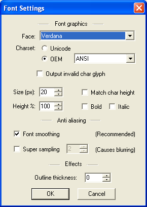
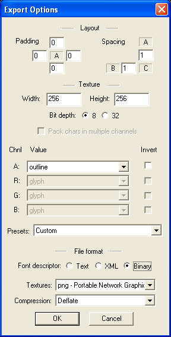
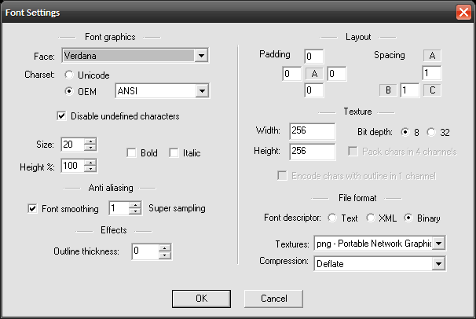

The MAUI user interface components use bitmap fonts in its own format. These files are converted from a specific, but common, format for bitmap fonts. The MoSync download comes supplied with a freeware tool called BMFont for creating bitmap fonts from the fonts installed in Windows. MoSync developers can use BMFont to create their own fonts for use in their applications.
[toc title: Topics; maxlevel: 2]
Note: An improved way of handling fonts for some platforms in MoSync was introduced in release 2.6. See our Developer Guide called Working With the Device Fonts API.
If you look in your MoSync installation folder, normally in C:\MoSync, you’ll find a folder called bin\BMFont. In there is the BMFont application by Andreas Jönsson, a freeware application which can create bitmap fonts. Bitmap fonts differ from standard TrueType fonts normally found on Windows. TrueType fonts describe the shape of each letter as vectors, which means that they can be scaled up and down without losing detail. Bitmap fonts are of a fixed size, and scaled bitmap fonts will appear jagged.
When you’re using MAUI, it only supports bitmap fonts, so you need to make sure that the size you create is the size you want. You can put as many fonts as you wish into your application, but each widget will only support one font. You cannot change fonts in the middle of a label for instance. If you want bold or italics in your application, you need to create them as separate fonts.
MAUI fonts only support the ASCII character set, so some characters and languages are not currently supported. They will be replaced in your application with spaces.
To create a new font, start BMFont. You can see on the left all of the available characters, and on the right, the character groups supported by this font. As MAUI fonts only support ASCII characters, then stick with the ‘Basic Latin + Supplement’ option. Other characters will take up space in the font file, and won’t render.
If you’re absolutely sure you won’t need some characters in your application, then leave them out. It will save space.
Clicking on the square next to ‘Basic Latin + Supplement’ will select all the characters in the set.
Note: Some fonts only contain ASCII characters. If this is the case, there aren’t any options on the right. This is very important. Most people’s font problems come from not getting these settings correct.
There are several formats for bitmap fonts, and the MoSync conversion tool (mof) will only convert from one of these.
Configure BMFont's settings as follows:
For BMFont v1.12 and MoSync 2.5+:
 
For BMFont v1.9 and MoSync 2.4 and earlier:

1. Change the Charset option from Unicode to OEM. If necessary, change the option in the dropdown box to ANSI.
2. Unless space is at a real premium, then I would say that having the anti-alias font smoothing is always worth it. There are some examples later. Set it to 1 pixel. This will double the size of the final font, but the quality difference is high.
3. At the bottom right of this dialog box, change the Font descriptor to Binary
4. Change the Textures option to PNG.
When you do this, and click OK, you’ll see the changes to font and size reflected in the main window.
1. Fonts on your computer screen look bigger than they do on your phone. Compare the size of your phone’s screen to the emulator. Make fonts bigger than you think you need.
2. Small fonts on the emulator will be unreadable on a real phone. Use them with great care.
3. Many fonts are too narrow. They may look wonderful in Photoshop, but they don’t necessarily translate onto a mobile phone. Clear, bold fonts are best.
4. You can get free fonts easily on the web. Google ‘free fonts’ for lots of sources.
5. When you save the fonts, give them clear descriptions like Arial16ptBold.fnt
When you’re happy with the fonts save it with these settings. This will create at least two files, one with a .fnt extension, and one with the name you’ve given to the font with _0.png. If you’ve got more than one png file, then go back to the font settings screen, and increase the size of the png. I don’t think that there is a limit on the size of this, but the font conversion tool will only work with one image.
To be able to use the font in the MAUI application, you need to convert from the created format to the internal format used by MoSync. There is a command-line tool for that in the bin sub folder of the MoSync root, usually C:\MoSync\bin.
Open a command line. You can do this by selecting Run from the Windows menu, and entering the command cmd.
The first thing you need to do is get to the correct directory. Assuming you’ve done a default installation of MoSync you need to type:
cd c:\MoSync\bin
and press Enter.
The prompt should now confirm your location. If you type ‘mof’ and press enter, you get a small help screen for using the tool.
The format of the commands for mof are
| -fontData | The name of the font file you’ve created |
| -fontImage | The name of the font image file you’ve created |
| -outFile | The name you want to give it |
| -fontColor | The color you want the font to be in. |
We’ll look at coloured fonts later in the tutorial.
If you’ve entered the command correctly, you’ll get a confirmation message, and your new file will be created in the bin folder. You should copy this to the resources folder of your project.
To use the fonts you’ve created, you need to add references to them in your resources file. If you want to know more about this, then there is a separate tutorial, but here is the code I’ve used.
.res STANDARDFONT .bin .include "resources/pretty.mof" .res YAHOOFONT .bin .include "resources/Yahoo.mof" .res YAHOOSMOOTH .bin .include "resources/YahooSmooth.mof"
To use a font in your application, you need to add a reference to MAHeaders.h and MAUI/Font.h in your code, and create a new Font in code.
// Create the fonts Font* yahooFont = new Font(YAHOOFONT);
You can then reference this when creating labels.
// Create a screen title, using the Yahoo font Label* titleLabel = new Label(0, 0, 240, 32, layout, "MoSync!", 0x0000C0, yahooFont);
I’ve created a short example application using free fonts I’ve created in BMFont.
// Create the fonts Font* standardFont = new Font(STANDARDFONT); Font* yahooFont = new Font(YAHOOFONT); Font* yahooSmoothed = new Font(YAHOOSMOOTH); // Create a layout Layout* layout = new Layout(0, 0, 240, 320, NULL, 1, 4); //Create a screen title, using the Yahoo font Label* titleLabel = new Label(0, 0, 240, 32, layout, "MoSync!", 0x0000C0, yahooFont); titleLabel->setAutoSizeY(true); titleLabel->setHorizontalAlignment(Label::HA_CENTER); // Smoothed label Label* smoothLabel = new Label(0, 0, 240, 32, layout, "MoSync!", 0x0000C0, yahooSmoothed); smoothLabel->setAutoSizeY(true); smoothLabel->setHorizontalAlignment(Label::HA_CENTER); //Create some more text, using the standard font Label* newsLabel = new Label(0, 0, 240, 32, layout, "Here is some interesting information. In 1964, a gang of eight pigs held their farmer hostage for 14 hours. When questioned, they said 'oink'.", 0xC00000, standardFont); newsLabel->setAutoSizeY(true); newsLabel->setMultiLine(true); this->setMain(layout);
This is the application running:
For comparison, I’ve blown-up the two title bars. One has the smaller but un-smoothed font, and the second is the larger, anti-aliased font. There is a big difference.
If you have one font, or at least one font you use the most in an application, then you don’t need to specify it whenever you create a label. You can use the Engine object in MAUI to specify the default font.
Engine& eng = Engine::getSingleton(); eng.setDefaultFont(standardFont);
You can then create labels without specifying a font, and it will use the one you set up here.
The label constructor is different though if you don’t specify a font. You can’t pass the label text without supplying a background colour and a font, so if you want to use the default font, you need to call the setCaption(text) method.
// Create some more text, using the default font
Label* newsLabel = new Label(0, 0, 240, 32, layout);
newsLabel->setCaption("Here is some interesting information.
In 1964, a gang of eight pigs held their farmer hostage for
14 hours. When questioned, they said 'oink'.");
newsLabel->setBackgroundColor(0xc00000);
newsLabel->setAutoSizeY(true);
newsLabel->setMultiLine(true);
This will produce exactly the same result as the previous code.
Finally a note on coloured fonts. By default, the mof tool will produce the font in white. However you can produce fonts in whatever colour you want, but in only one colour at a time. You can’t have fonts with coloured borders for instance. You’ll need to produce a mof file for every colour of every font you want to use.
You can only use one font per label as well, so you can’t change colour in the middle of a label, or move to a bold font.
To create a font in a different colour, you need to add –fontColor <colour in hex> at the end of the mof command. For instance:
mof –fontData YahooSmooth.fnt –fontImage YahooSmooth_00.png –outFile
YahooSmoothRed.mof –fontColor 0C0000
Note: Font colours are specified like web colours, with a byte for their red, green and blue values. You don’t need to put anything to specify that this is a hex number though, so ‘0c0000’ is right but ‘0xC00000’ won’t work.
Coloured fonts still anti-alias well.